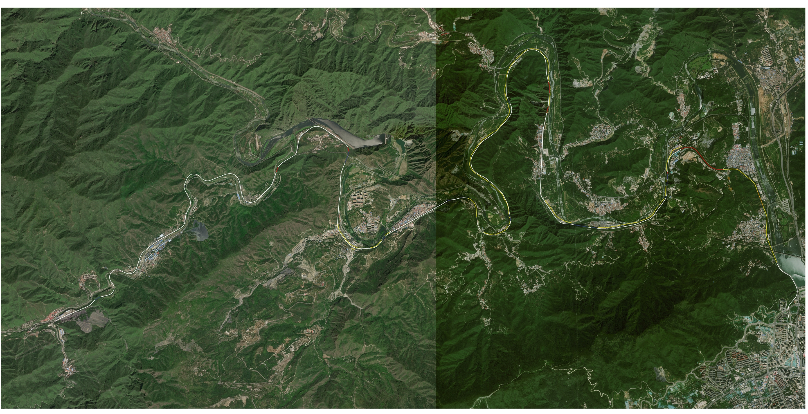
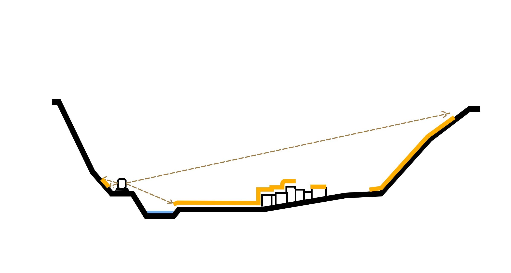
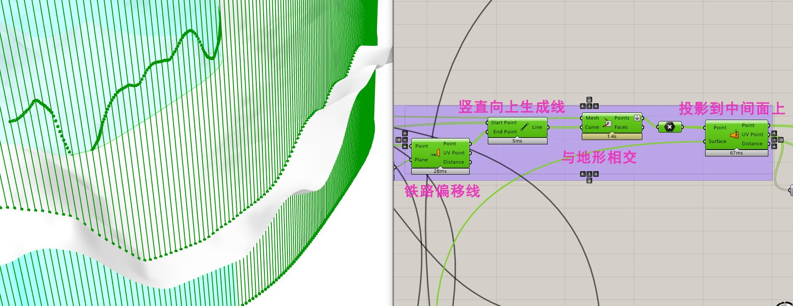
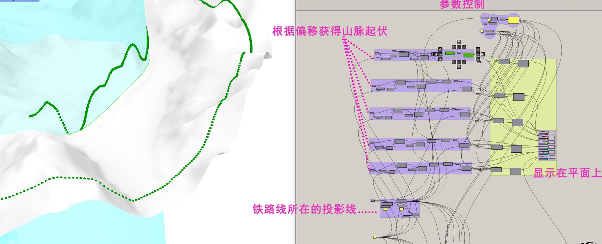
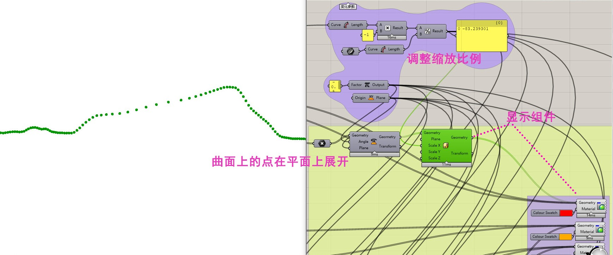
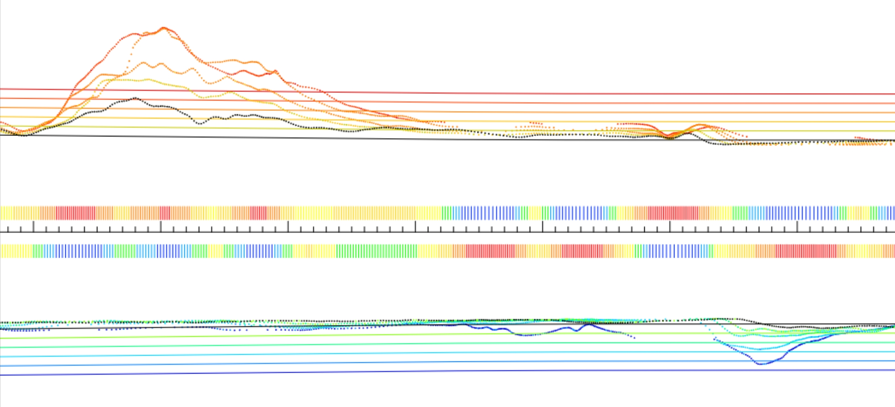

视域生成技术背景
对于北京门头沟区一段现有的铁路资源，如何开发他的后续利用价值是值得城市发展思考的问题。可以从以下几个角度探索其景观利用价值： 山峦曲线、动态景观界面、远近变化感官等等，而这些在大尺度地形的情况下没有自动化生成技术断不能完成，因此基于grasshopper的视域生成模型应运而生。
Rhino 和 Grasshopper 简介
Rhino 和 Grasshopper 是两个由 McNeel & Associates 开发的建模工具，主要用于计算机辅助设计（CAD）和计算机辅助制造（CAM）领域。
Rhino：Rhino 是一款三维建模工具，也被称为 Rhinoceros 3D。它是一个强大且灵活的建模软件，适用于从简单几何体到复杂曲面的各种设计和建模需求。 Rhino 提供了丰富的建模工具和功能，包括绘制、编辑、分析、渲染等，可用于创建各种类型的三维模型，如产品设计、建筑模型、工业设计等。
Grasshopper：Grasshopper 是 Rhino 的可视化编程插件，提供了一种基于节点和连接的图形化编程环境。它使用户能够通过拖拽和连接节点来创建复杂的算法和程序，而无需编写传统的文本代码。 Grasshopper 的强大之处在于其可视化编程方式，使得算法设计和参数化建模变得更加直观和灵活。用户可以通过调整参数和修改连接来快速迭代和优化设计。
Grasshopper 与 Rhino 紧密集成，可以直接在 Rhino 界面中使用，并且能够利用 Rhino 的建模工具和功能进行模型的创建和编辑。
火车视线原理示意
为了更好的开发铁路途径山区的景观，我们应当了解人在火车上看到外部景观的视线时如何的，如果能够将所见之景展示在二维平面上，那么将对景观开发有很好的指导作用。
铁路转弯处三维视线可视化：铁路直道处三维视线可视化：
可见域剖面示意： 
分步骤实现动态视域可视化
这一部分的实现利用了grasshopper直接控制空间元素进行编程的特性，使用简洁的电池块就完成了投影、展开的复杂任务，并且保留了所有的中间结果，方便后续的渐变色填充。
偏移、等距取点： 
投影到铁路曲面： 
将投影结果展开到平面上： 
最终立体效果：
最终平面展开效果（部分）： 
由于平面展开不改变点的等距特性，而投影会因为铁路的曲度而发生缩放， 所以最终展示的点之间的横向距离展示了铁路的曲率，而高低展示了不同 视线距离的山峦线。上图将不同的距离赋予不同的颜色，以更好的区分各 个距离.并且添加了用颜色区分的点距特征线，使得上述特性更加直观。
后记
本次在闲置铁路资源的动态视域可视化项目中，我作为技术负责人主动完成了很多任务， 诸如地形数据文件格式调整、投影方法研究、最终效果展示等；也克服了很多困难，诸如 大尺度模型运行性能跟不上、大尺度可视化缩放失真等等问题。
铁路的动态视域在很多学科中都不是主流研究问题，甚至不被提起，但是这种空间操作的方法 值得很多别的项目借鉴，我希望我的工作能给更多人带去启发。